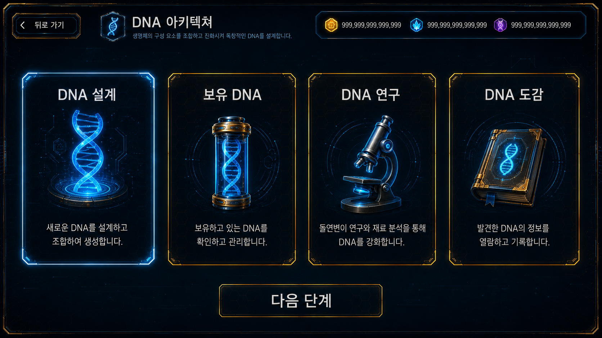
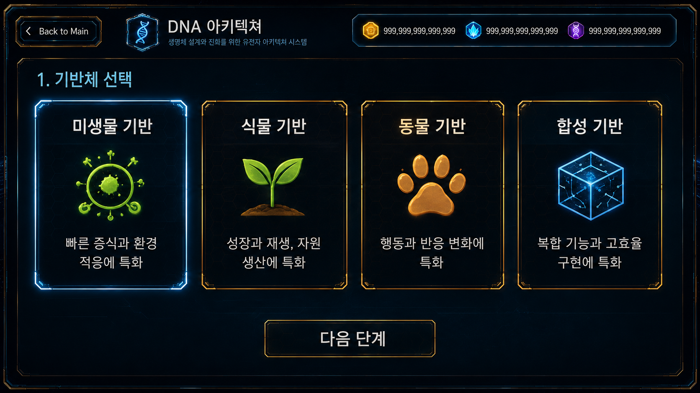
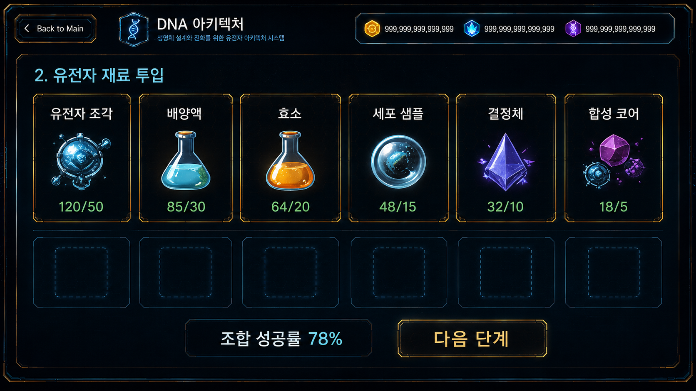
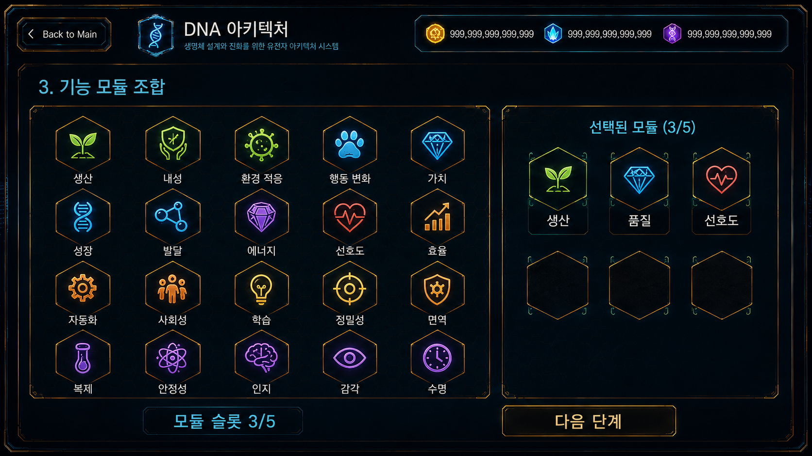
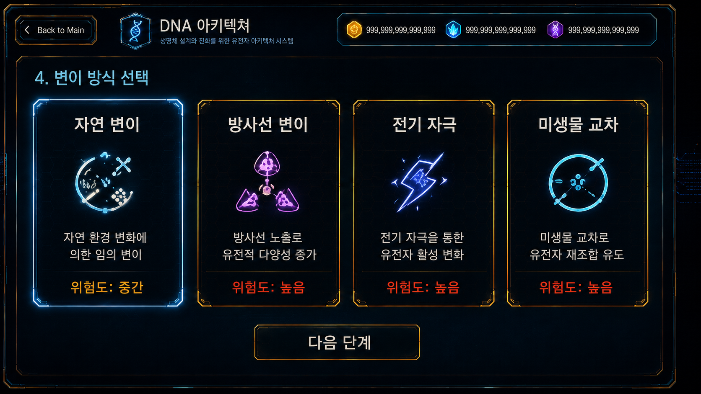
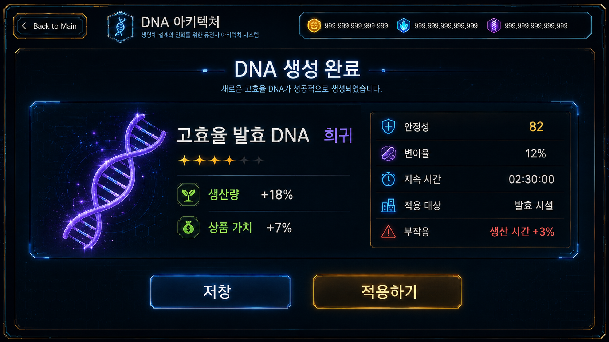
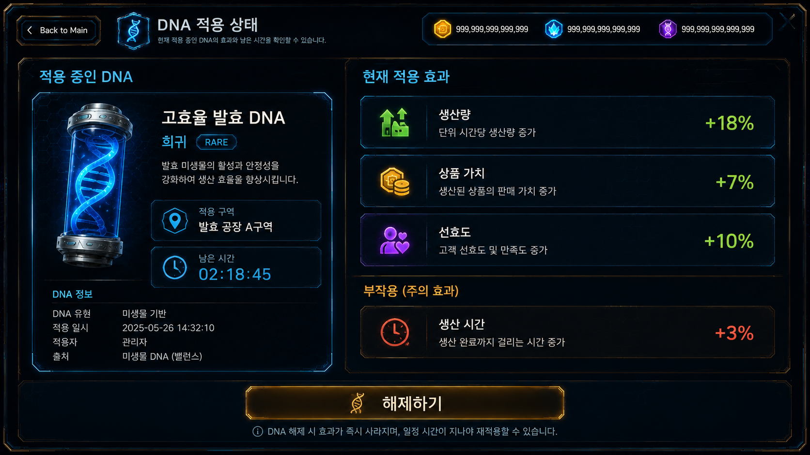

Core System
DNA 아키텍쳐

진입 경로
홈
→ 코어 시스템
→ DNA 아키텍쳐DNA 아키텍쳐 메뉴에서는 기반체, 유전자 재료, 기능 모듈, 변이 방식을 조합하여 새로운 DNA를 제작한다.

기본 구조
DNA 아키텍쳐는 완성된 DNA를 목록에서 선택하는 시스템이 아니다.
플레이어가 여러 구성 요소를 단계별로 조합하여 서로 다른 기능과 위험도를 가진 DNA를 제작한다.
기반체 선택
→ 유전자 재료 투입
→ 기능 모듈 조합
→ 변이 방식 선택
→ 최종 DNA 생성같은 기반체를 사용하더라도 투입한 재료, 기능 모듈, 변이 방식에 따라 서로 다른 DNA가 생성된다.
기반체 선택
플레이어는 제작할 DNA의 기본 계열을 선택한다.
기반체는 최종 DNA의 기본 성향과 적용 방향을 결정한다.
미생물 기반
- 생산
- 발효
- 환경 적응
- 상품 변화
식물 기반
- 성장
- 재생
- 자원 생산
- 지속 효과
동물 기반
- 행동
- 이동
- 감각
- 소비자 반응
합성 기반
- 복합 기능
- 다른 계열 혼합
- 높은 효율
- 높은 불안정성

유전자 재료 투입
플레이어는 DNA를 구성할 유전자 재료를 선택한다.
유전자 재료마다 추가되는 성질과 역할이 다르다.
유전자 조각
특정 능력이나 효과를 추가한다.
배양액
DNA의 안정성과 제작 성공률을 높인다.
효소
유전자 결합 효율과 조합 성공률을 높인다.
세포 샘플
기반체의 성질을 강화하거나 다른 생물 계열의 특성을 추가한다.
미생물 샘플
발효, 생산, 환경 반응과 관련된 효과를 추가한다.
결정체
희귀 효과나 특수 속성이 발생할 가능성을 높인다.
합성 코어
서로 다른 기반체 계열이나 기능 모듈을 함께 사용할 수 있게 한다.

기능 모듈 조합
기능 모듈은 DNA가 실제로 강화하거나 변화시키는 효과를 결정한다.
사용 가능한 기능 모듈은 다음과 같다.
- 생산
- 성장
- 내성
- 속도
- 품질
- 가치
- 선호도
- 환경 적응
- 행동 변화
여러 기능 모듈을 동시에 선택할 수 있지만 슬롯 수에는 제한이 있다.
조합 예시
생산 + 품질
성장 + 환경 적응
선호도 + 행동 변화
생산 + 속도
품질 + 가치모듈을 많이 넣을수록 효과 범위는 넓어지지만 안정성이 감소하거나 제작 비용이 증가할 수 있다.

변이 방식 선택
변이 방식은 최종 DNA의 효과 강도, 안정성, 희귀도, 부작용을 결정한다.
안정 배양
- 성공률 증가
- 안정성 증가
- 효과 강도 감소
- 부작용 감소
자연 변이
- 결과 수치가 일정 범위에서 변화
- 희귀 특성 출현 가능
- 안정성과 효과가 균형적
방사선 변이
- 효과 강도 증가
- 희귀 특성 출현 확률 증가
- 안정성 감소
- 부작용 확률 증가
전기 자극
- 속도와 행동 관련 효과 강화
- 적용 결과가 빠르게 나타남
- 지속 시간이 감소할 수 있음
미생물 교차
- 미생물 관련 특성을 복합 적용
- 생산과 환경 적응 효과 강화
- 특정 조건에서 추가 변이 발생
합성 재조합
- 서로 다른 계열 기능 혼합
- 강력한 복합 DNA 제작 가능
- 제작 비용과 실패 위험 증가

최종 DNA 생성
최종 DNA는 선택한 구성 요소에 따라 자동으로 생성된다.
기반체
+ 유전자 재료
+ 기능 모듈
+ 변이 방식
= 최종 DNA고효율 발효 DNA
미생물 기반
+ 발효 유전자 조각
+ 배양액
+ 생산 모듈
+ 품질 모듈
+ 안정 배양- 생산량 증가
- 상품 가치 증가
- 높은 안정성
- 낮은 변이율
- 적용 대상: 발효 상품
적응형 고속 성장 DNA
식물 기반
+ 재생 세포 샘플
+ 성장 모듈
+ 환경 적응 모듈
+ 자연 변이- 성장 속도 증가
- 환경 적응 증가
- 적용 대상: 식물과 농장 자원
소비 반응 증폭 DNA
동물 기반
+ 감각 유전자 조각
+ 선호도 모듈
+ 행동 변화 모듈
+ 전기 자극- 상품 선호도 증가
- 구매 행동 발생률 증가
- 적용 대상: 손님 행동
불안정 복합 DNA
미생물 기반
+ 합성 코어
+ 생산 모듈
+ 행동 변화 모듈
+ 방사선 변이- 생산량 크게 증가
- 행동 변화 효과 추가
- 낮은 안정성
- 높은 변이율
- 부작용 발생 확률 증가

DNA 결과 정보
DNA 화면에서는 다음 정보를 확인한다.
- DNA 이름
- 기반체
- 등급
- 주요 효과
- 보조 효과
- 안정성
- 변이율
- 지속 시간
- 적용 대상
- 부작용
- 조합 태그
- 제작 비용
제작 제한
DNA 제작에는 다음 슬롯 제한이 적용된다.
기반체 슬롯 1개
유전자 재료 슬롯 2~4개
기능 모듈 슬롯 1~3개
변이 방식 1개강력한 조합일수록 다음 요소가 증가한다.
- 제작 비용
- 제작 시간
- 실패 확률
- 변이율
- 부작용
전체 제작 흐름
DNA 설계도 선택
→ 기반체 선택
→ 유전자 재료 투입
→ 기능 모듈 선택
→ 변이 방식 선택
→ 예상 결과 확인
→ DNA 제작
→ DNA 라이브러리에 저장
→ 적용 대상 선택
→ 효과 발현메뉴 설명
DNA 아키텍쳐
기반체, 유전자 재료, 기능 모듈, 변이 방식을 조합하여 새로운 DNA를 제작합니다. 선택한 조합에 따라 DNA의 효과, 안정성, 변이율, 희귀도, 부작용이 달라집니다.